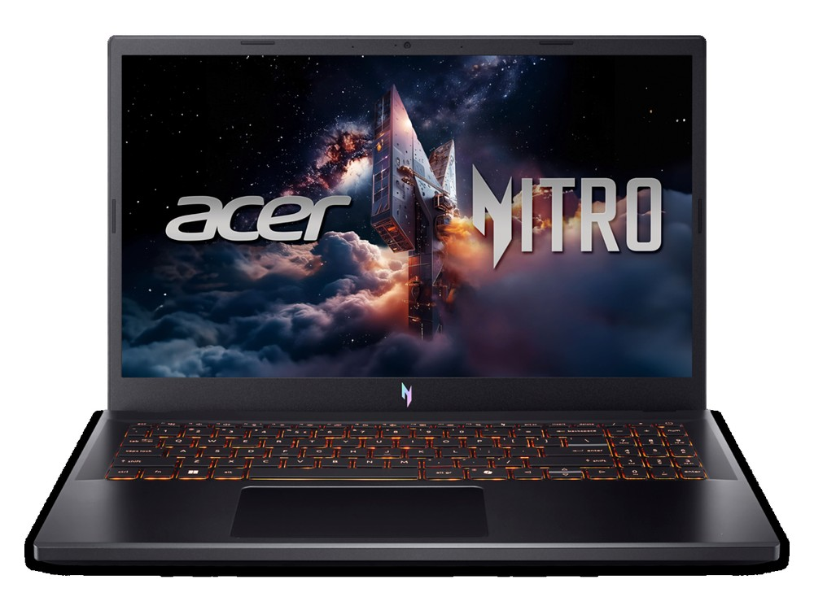

Ficha técnica
| Procesador | Intel Core 5 210H · 8 núcleos |
|---|---|
| Gráficos | NVIDIA RTX 5050 · 8 GB |
| Memoria | 16 GB DDR4 |
| Almacenamiento | 512 GB SSD |
| Pantalla | 15,6" IPS Full HD · 165 Hz |
| Peso | 2,11 kg |
| Autonomía | 8 h según el fabricante |
| Sistema operativo | FreeDOS |
| Precio | 1199 € orientativo |
Para quién es
Su mejor baza es el gaming, con 89 de 100. Para moverse se queda en 45 de 100. Pesa 2,11 kg. Cuesta 1199 €, en la mitad de la tabla de precios.
- Encaja si lo que más te importa es jugar con soltura, y el presupuesto llega a 1199 €.
- Busca otra opción si lo que prima es la portabilidad: aquí saca 45 de 100.
Se vende sin sistema operativo: hay que instalar Windows o Linux y contar con la licencia.
Puntos fuertes y débiles
A favor
- Pantalla fluida: 165 Hz.
- Gráfica dedicada: NVIDIA RTX 5050 · 8 GB.
En contra
- Pesado: 2,11 kg, poco práctico para llevarlo a diario.
- Sin sistema operativo: hay que instalar Windows o Linux y contar con la licencia.
Dónde comprarlo
El precio cambia a menudo y puede haber varias configuraciones: comprueba procesador, memoria y almacenamiento antes de comprar.
Ver precio actual en AmazonComo afiliado de Amazon, ComparaPortátil obtiene ingresos por las compras adscritas que cumplen los requisitos aplicables. No cambia lo que pagas ni las notas del comparador.
Notas por uso
Escala de 0 a 100. En el comparador se recalculan según el perfil que elijas. La nota global es 71 / 100, la media de los cuatro apartados.
Alternativas por precio
Los tres modelos del catálogo que más se acercan a su precio:
- MacBook Air 13" (M4)mismo precio
- ASUS TUF Gaming A16+50 €
- HP OmniBook 5 14+50 €
Rival directo: ASUS TUF Gaming A16
Es el modelo del catálogo más cercano en precio que también destaca para jugar.
| Acer Nitro V 15 | ASUS TUF Gaming A16 | |
|---|---|---|
| Precio | 1199 € | 1249 € |
| Peso | 2,11 kg | 2,20 kg |
| Autonomía | 8 h según el fabricante | 10 h según el fabricante |
| Nota para jugar | 89 / 100 | 91 / 100 |
| Nota global | 71 / 100 | 72 / 100 |
Preguntas frecuentes
¿Sirve el Acer Nitro V 15 para jugar?
Sí. Saca 89 de 100 para jugar gracias a su NVIDIA RTX 5050 · 8 GB, de las mejores notas del catálogo en este apartado.
¿Cuánto dura la batería del Acer Nitro V 15?
8 horas según el fabricante. Esa cifra se mide con brillo bajo y tareas suaves; con uso normal, cuenta con algo más de la mitad.
¿Es buena opción para llevarlo a clase o al trabajo cada día?
No es lo ideal. Con 2,11 kg, más el cargador, es un equipo para mover de vez en cuando, no a diario.
Compáralo con otro modelo
Abre el comparador con este portátil ya cargado y enfréntalo a cualquiera de los 34.
Abrir el comparador